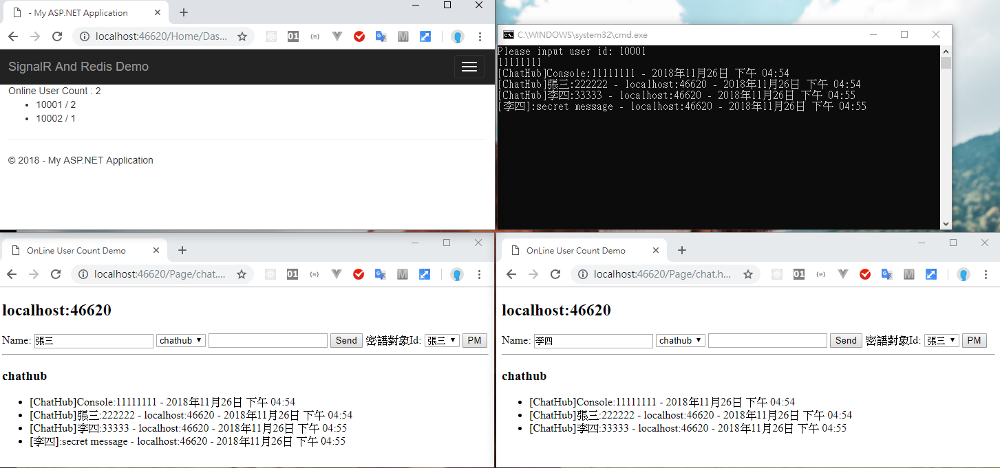

為了要嘗試多台主機的情況，改採用 Redis 來做
先前的練習專案也有許多小地方錯誤，不過反正是練習，也就沒打算修正；這次重新開一個練習專案，比較乾淨
signalr service project
首先用 nuget 安裝 Microsoft.AspNet.SignalR.Redis，並在 startup.cs 加入下列指令
1 | public class Startup |
建立 docker redis
雖然有 windows 版本，不過嘗試了一下好像無法執行redis-cli，所以還是用 docker 來練習
1 | get docker image |
這次的練習大致上困難點只是在架設 redis，搞定都過了一下午了，原本想利用pubsub numsub chat去抓出有多少個人訂閱了該頻道，後來才想到這邊的數字應該指的是誰跟 redis 訂閱，那當然就是 web 站台了…不信的人自己可以 deploy 到 local IIS 玩一下，站台啟動跟站台停止，查看一下 pubsub numsub chat 的回應
怎麼取得線上人數這件事情，似乎真的要自己在連線的那堆事件裡硬幹了…
調整幅度有點大，細節不說了，重點節錄：
- 僅使用最基礎的字串 key-value pair，透過序列化、反序列化運用
- 連線、斷線、重連事件內先處理各項資料的 DTO 再丟去更新 cache
- Console 專案連線位置須注意是跟著 Web 走，需要可自行調整 ( Ref：文章 )
- 個人資料用來記錄使用者 ID 與該使用者的 ConnectionId，主要是為了密語功能
- 在線人數用來顯示總人數、及哪一個人有幾個 ConnectionId
- 原先用 HTML 改為 MVC，沒什麼特殊意義，隨手改的
- Redis 各項指令須注意時間複雜度
- SignalR 服務端掛掉、重新佈署，會導致無法觸發到 OnDisconnected()事件，後果就是 Cache 數據會不正確，解決方案聽說有 LoadBanlance、官網介紹是說用 Job 處理掉無效資料

附上練習程式碼